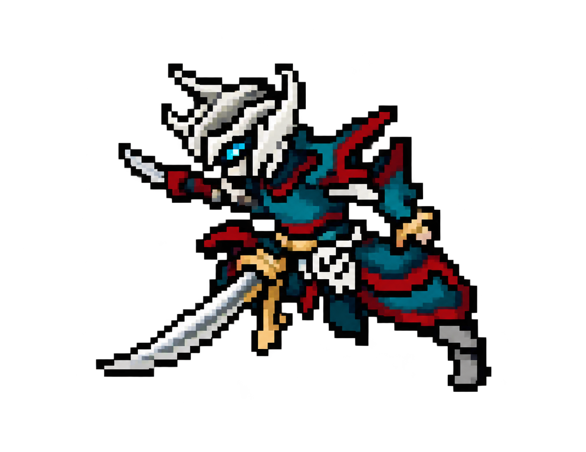
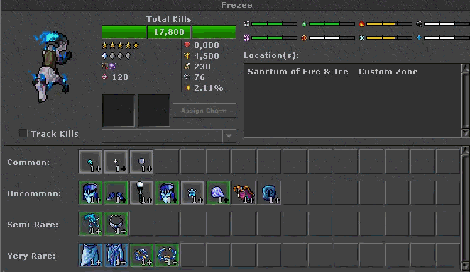
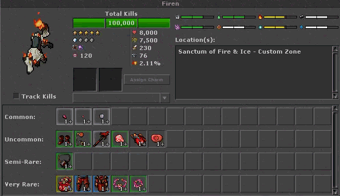
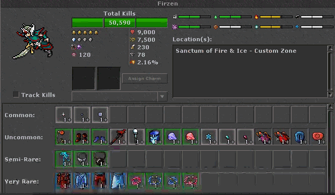

Hunt Custom · VIP
New Elfs Firzen
Portal de level 800 e hazard 10 com o mesmo bestiário do Sanctum.

Hunt · level 800 · hazard 10 · VIP
New Elfs Firzen
O portal New Elfs Firzen pede level 800 e hazard 10. Esta hunt compartilha o bestiário de Frezee, Firen e Firzen com o Sanctum of Fire & Ice. Abaixo estão os perfis completos dessas três criaturas, com dano, resistências e loot.
Os três compartilham o mesmo perfil elemental: físico, energia e terra −5%, fogo e gelo +15%. Imunes a paralisia e enxergam invisibilidade. Stone bag nível 1 sai a 0,02% em todos.
Frezee
corpo a corpo
Dano. Teto perto de 900 por segundo. Mix aproximado: gelo 57%, físico 43%.
- Melee físico até 1.000
- Ice strike 900–1.200, alcance 7
- Icicle berserker 1.100–1.400, área raio 3
- Smokeball de gelo 900–1.200, área no alvo
- Feixe de gelo 900–1.200, comprimento 5
- Ice chain 1.100–1.400
Sem cura. Imune a troca de outfit.
| Drop | Chance | Qtd. |
|---|---|---|
| Crystal coin | 44,80% | 1–2 |
| Small enchanted sapphire | 29,50% | 2–3 |
| Cyan crystal fragment | 14,75% | 1–3 |
| Avalanche rune | 9,95% | 5–9 |
| Ultimate mana potion | 9,31% | 1 |
| Blue gem | 7,08% | 1–2 |
| Ice flower | 5,31% | 1–3 |
| Glacier mask | 3,54% | 1 |
| Moonlight rod | 3,19% | 1 |
| Glacier shoes | 3,10% | 1 |
| Glacier amulet | 1,73% | 1 |
| Northwind rod | 1,39% | 1 |
| Ring of blue plasma | 0,53% | 1 |
| Collar of blue plasma | 0,53% | 1 |
| Glacier robe | 0,20% | 1 |
| Glacier kilt | 0,20% | 1 |
| Stone bag nível 1 | 0,02% | 1 |
Firen
corpo a corpo
Dano. Teto perto de 900 por segundo. Mix aproximado: fogo 67%, físico 33%.
- Melee físico até 1.000
- Flame strike 900–1.200 a cada 1 s, alcance 7
- Fireball em cruz 1.100–1.400, raio 2
- Blast ball 900–1.200, área raio 3
- Fire berserk 900–1.200, área raio 3
- Fire chain 1.100–1.400
Sem cura. Imune a troca de outfit. Troca de alvo com peso em quem está com pouca vida e em quem causa mais dano.
| Drop | Chance | Qtd. |
|---|---|---|
| Crystal coin | 42,67% | 1–2 |
| Small enchanted ruby | 27,36% | 2–3 |
| Red crystal fragment | 13,68% | 1–2 |
| Great fireball rune | 9,95% | 3–7 |
| Ultimate health potion | 9,31% | 1 |
| Red gem | 5,47% | 1–2 |
| Wand of dragonbreath | 2,96% | 1 |
| Magma monocle | 2,88% | 1 |
| Magma boots | 2,88% | 1 |
| Magma amulet | 1,61% | 1 |
| Collar of red plasma | 0,49% | 1 |
| Ring of red plasma | 0,49% | 1 |
| Magma legs | 0,18% | 1 |
| Magma coat | 0,18% | 1 |
| Stone bag nível 1 | 0,02% | 1 |
Firzen
híbrido fogo e gelo
Dano. Teto perto de 1.100 por segundo. Mix aproximado: gelo 39%, fogo 32%, físico 29%.
- Melee físico até 1.100
- Ice strike 1.000–1.300
- Icicle berserker 1.100–1.400, área raio 3
- Smokeball de gelo 900–1.200
- Feixe de gelo 900–1.200
- Flame strike 900–1.200 a cada 1 s
- Fireball em cruz 1.000–1.300
- Blast ball e fire berserk 900–1.200
- Fireice chain: 500–800 por salto, alternando gelo e fogo, até 4 saltos
- Paralisia −600 de velocidade por 20 s
Defesa. Cura 600–1.100 com 25% de chance a cada 2 s. Pode ser iludido.
| Drop | Chance | Qtd. |
|---|---|---|
| Crystal coin | 38,69% | 1–2 |
| Small enchanted sapphire | 24,18% | 2–5 |
| Small enchanted ruby | 24,18% | 2–5 |
| Avalanche rune | 16,85% | 7–15 |
| Great fireball rune | 16,85% | 7–15 |
| Ultimate mana potion | 15,78% | 1 |
| Ultimate health potion | 15,78% | 1 |
| Cyan crystal fragment | 4,84% | 2–5 |
| Red crystal fragment | 4,84% | 2–3 |
| Ice flower | 4,35% | 1–5 |
| Blue gem | 3,87% | 1–2 |
| Red gem | 3,87% | 1–3 |
| Glacier mask | 2,90% | 1 |
| Moonlight rod / wand of dragonbreath | 2,61% | 1 |
| Glacier shoes / magma monocle / magma boots | 2,54% | 1 |
| Glacier amulet / magma amulet | 1,42% | 1 |
| Northwind rod | 1,14% | 1 |
| Ring e collar de plasma azul ou vermelho | 0,44% cada | 1 |
| Glacier robe, glacier kilt, magma legs, magma coat | 0,16% cada | 1 |
| Stone bag nível 1 | 0,02% | 1 |